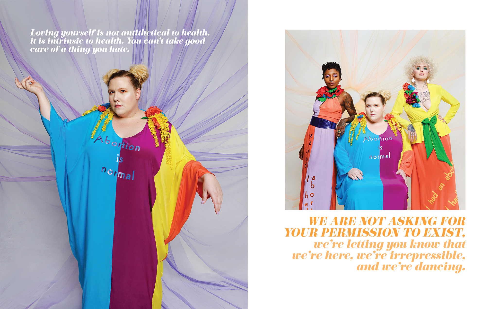
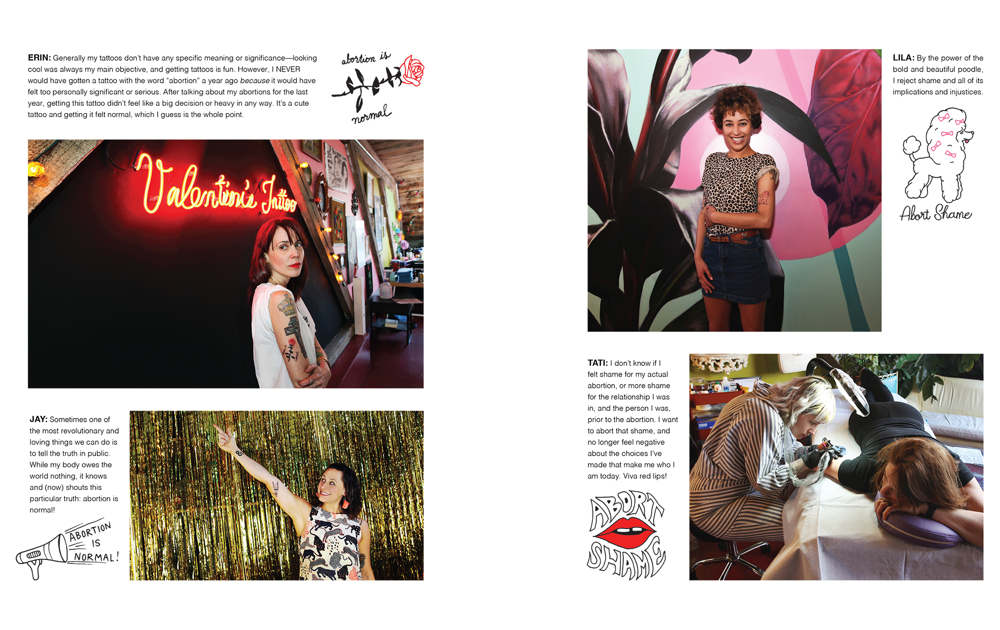

Amelia Is Shouting: A Conversation About Abortion
by
d16e.png?itok=YWM907Vw)
In 2015, Amelia Bonow shared her abortion story to her Facebook page, and she forever changed the way many of us talk about abortion. What started as one moment in a long history of abortion storytelling turned into a larger movement, and Shout Your Abortion was born. Since its inception, SYA has been a feature in the abortion advocacy movement, creating a safe space for folks to talk about their abortions without shame or stigma. Most recently, SYA released a book; a beautiful candy colored collection of abortion stories, resources, and magnificent artwork – an celebration of the importance of abortion as a social good.
I’m lucky enough to call Amelia a friend. She is the raddest, most badass woman in town. She is always there to lend advice or support. Her bravery is infectious. She’s the kind of friend who gives you permission to be a more authentic, less apologetic version of yourself, because she is the most authentic and unapologetic version of herself and she’s so fucking cool you can’t help but want to be just like her. When faced with challenges or decisions big and small, I often find myself thinking, “What would Amelia do?” So, when I wanted to have a candid conversation about abortion for the benefit of young people, like what to expect, how to help a friend having one, and the best candy to keep on hand for recovery – I knew Amelia was the right gal for the job. Here’s what she had to say.
Can you walk me through what your own abortion experience was like? Did it hurt? What was your recovery like?
I remember waking up and getting ready for my appointment and feeling some sense of gravitas around the situation. I remember putting on my shoes and thinking to myself “I am putting on my Keds. I am wearing black Keds to have an abortion.” I wasn’t scared or upset, but the day had a sense of magnitude. As I walked into the clinic and settled into the waiting room, I realized that everyone there was having an abortion, that all of us had decided NOT to stay pregnant, and that the clinic staff was literally just here to help us all stop being pregnant. That felt really… special. I felt totally overcome with gratitude for the people working there—like, of all the jobs you could have, you have decided to help people have abortions all day, and in doing so, you are helping all these strangers live the lives they want to live. I just felt super grateful and in awe of the whole deal. So in a way, my abortion was this intensely special and unique emotional experience for me.
Although the procedure itself took about three minutes, I remember being at the clinic for hours. It’s a long day! But the procedure itself just felt like a totally run-of-the-mill medical experience—for me it felt physically comparable to having an IUD inserted. I couldn’t believe how quick it was, and how relatively painless. I don’t remember the recovery experience a ton, probably because there wasn’t much of one. I think I just laid in bed for a day with my boyfriend and ate a lot of delivery.
What are your top 3-5 items to have on deck post-abortion?
Hmm. I guess in my personal ideal would include someone to cuddle with, a pile of kittens, some CBD gummies, lots of crunchy salty things, and bubble water.
What was something you wish you knew going into your abortion that you know now?
I really can’t think of an answer for this one, my experience was pretty idyllic!
What’s would you tell your younger self about abortion? What would you tell any young person about it?
Abortion is a normal reproductive experience. You likely know LOTS of people who’ve had abortions, for all sorts of different reasons. Your abortion is yours to define! There’s a lot of cultural noise telling you how you’re supposed to feel or what this is supposed to mean to you, but ultimately you are the only person who knows whether you want to end your pregnancy and what it means to you to do so. There’s no right or wrong way to feel after an abortion; it’s ok if you feel sad, but it’s also totally ok if you don’t. And it’s totally normal—in fact, 95% of people who have abortions report feeling relived afterwards.
What’s the best way to support a friend who’s having or who has had an abortion?
Ask them if they’d like to talk about it. If they do, simply ask how they are feeling and be a good listener. If they don’t, ask if there is anything else you can do to support them. Maybe you can drop off some food or treats, or maybe they’d like to just have you come over and hang out in their space without talking. Maybe they’d like for you to check on them via text and send cute animal videos. I think the only best way to support someone through an abortion (or really anything!) is to ask them what they need.
How did you deal with ~haterz~ or people who judged you? What’s your advice for a young person going through the abortion process who has people in their life who aren’t supportive?
I didn’t experience any haterism from friends, family or people in my life—I’m very lucky in that all the people close to me are totally okay with abortion. All the haterz who come at me are essentially random people on the internet (although some of them are high profile conservative media people, they are still literally random people on the internet to me). I guess in terms of how I deal, I truly just do not give a fuck what those people think about my choices—their opinions are irrelevant to me. Like, would these people be bothered if I contacted them to let them know I think they are trash because I think that judgmental Christians are wrong about life? Of course they wouldn’t! Why would anyone care what some stranger with totally different values thinks about their choices? Unfortunately, many anti-choice people seem to feel like harassing people who have had abortions is like…a call from God or something. And in the last couple decades, all this harassment has successfully created a cultural climate in which silence and shame and secrecy are the norm. Someone like me represents a threat to them, because it is impossible to shame me for having an abortion. I am literally shameless. Not just about my abortion, but in general! Shame is fucked up and poisonous and it can totally derail people’s lives when they don’t find healthy ways to work through it. In my opinion, the best way to inoculate yourself against any kind of shame is to be just accountable to yourself and the people you respect and fuck what anybody else thinks about your choices.
What are some resources where young people can learn more about abortion or get abortion support?
Of course, there’s Scarleteen, which has been an unparalleled resource for inclusive, accurate, affirming info about sex and reproductive health, including abortion, for decades. (You can find out about our direct services and how to access them here. - H) All-Options is a toll free hotline which provides unconditional, judgment-free support for people in all of their decisions, feelings, and experiences with pregnancy, parenting, abortion, and adoption. I haven’t used them but I’ve heard wonderful things.
As far as abortion positive media, I’ve gotta plug the Shout Your Abortion book, which was released last November! It’s a collection of stories and tons of art and creative organizing ideas for people who want to get more comfortable talking about abortion and learn more about what it’s actually like to have one. Or more than one! The book is beautiful and I’m so incredibly proud of everyone who was a part of the project. Also, if you sign up for the SYA mailing list sometime soon (don’t be scared, we send like one email a month) we’re just about to launch a book club program where you and your friends can get a pile of free or discounted books and we’ll send you swag and discussion questions!
Can you talk a little bit about sex and abortion? Why is it important for sex positivity to be part of the abortion conversation?
A lot of pro-choice advocacy feels like it’s trying to keep the conversation as far away from sex as possible, arguing for abortion rights on the grounds of economic stability, medical safety, the right to self-determination. One thing we rarely ever talk about is that we should have the right to have sex without fearing that if an unwanted pregnancy happens, we will be forced to make a baby that we don’t want.
All of us all been conditioned to avoid talking about sex when we talk about our abortions. “Wanting to fuck” is definitely not on the traditionally approved list of acceptable reasons why you got pregnant. I think that’s ridiculous! It’s especially ridiculous when I think of like, how many cis men are huge babies about wearing a condom because it makes their dick feel slightly cooler to do it without one. And at the end of the day, literally NO ONE ever looks at a pregnant person who wants an abortion and is like, “Why didn’t your partner choose to wear a condom?”. Women are framed as solely responsible for unwanted pregnancies AND we are solely blamed for our abortions AND we are somehow supposed to avoid correlating any part of the situation with positive sexual experiences.
All that said, not everybody likes talking about sex (or having it for that matter) and being comfortable talking about sex is not some sort of feminist imperative or badge of honor. I think that the concept of sex positivity has mutated in some unfortunate ways, so that sometimes it feels like just another source of pressure for women to be very sexual in a particular way. You are not a bad feminist if you want monogamy! It’s okay if you hate sex or think it’s overrated! Just because you don’t like rough sex doesn’t mean you are repressed! And you don’t need to talk about sex if that doesn’t feel right to you. However, I think it’s important to look at the reasons why abortion and sex are rarely discussed in the same breath, even though they are, ahem, intimately related.
To that point – any advice for how to talk to your partner about sex after abortion?
If you are the partner who got someone pregnant, I would advise that you ask questions, listen, and do your very best to find out how your partner is feeling, emotionally, physically, psychologically, and find out what they need from you in all of those areas in order to feel good. I think especially with something as sensitive as sex, we should air on the side of over communicating. Your partner can always say, “We don’t need to talk about this anymore,” if that’s what they want.
Young people in 37 states have to either let a parent know they’re having an abortion, or go to court to get permission from a judge. What words of wisdom would you have for young people facing that process?
.png) For help navigating judicial bypass, I would recommend contacting Jane’s Due Process. They are focused on helping minors get abortions without parental consent in Texas specifically, but their hotline can help you find a referral to an org that might be able to help you in your area. I would also definitely advise that young people facing a judicial bypass call All-Options. Ideally, you will have friends or other supporters around you, but even if you do it might be nice to process the situation in a totally anonymous way, with experts who are familiar with your type of situation. Overall, please just remember that you are not alone.
For help navigating judicial bypass, I would recommend contacting Jane’s Due Process. They are focused on helping minors get abortions without parental consent in Texas specifically, but their hotline can help you find a referral to an org that might be able to help you in your area. I would also definitely advise that young people facing a judicial bypass call All-Options. Ideally, you will have friends or other supporters around you, but even if you do it might be nice to process the situation in a totally anonymous way, with experts who are familiar with your type of situation. Overall, please just remember that you are not alone.
What should young people look for in a provider?
I’m a huge fan of independent abortion providers. Most of us in the United States associate Planned Parenthood with abortion care, but indie providers actually provide the majority of abortions in this country. Indies are smaller, community focused health clinics, and indie providers are very serious about providing abortion care. The indie providers I know are the most caring, compassionate people I’ve ever met, and they’re incredibly dedicated to making sure that each patient they see receives an exceptional level of care. Because abortion access is steeply declining, not all of us can afford to be super selective about which provider we choose, but I suggest checking the indie provider list at Abortion Care Network if you are able to shop around a little bit.
I think that there are a couple questions you could ask to help you be comfortable with a provider. For starters, you might ask how long they’ve been providing abortion care and what called them to do that work. Their answer to that might help you to extrapolate whether they share your values. You also might just ask them to walk you through the abortion process, ask some questions, and see whether you like the way they communicate and the vibe between you. I also like asking providers whether they provide trans health care and how they feel about that, even though I’m not trans. To me, a provider’s level of comfort discussing trans health care can tell me a lot, including whether or not they’re interested in practicing patient centered care.